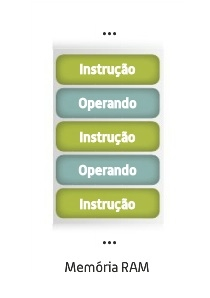
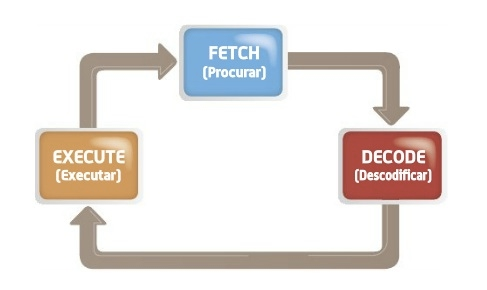

Execução de um programa residente em memória
Na arquitetura de von Neumann, de forma a minimizar os recusros envolvidos, as instruções e dados partilhavam a mesma memóra e canais de comunicação(barramentos). Para que o CPUO indentificasse quais as posições da memória que continham instruões ou dados, era necessário que estas estivessem distribuidas de forma concecutiva
Assim, o CPU sabe que a primeira leitura que fará da memória irá conter o código da instrução(exemplo: somar dois valores) e que a posição seguinte irá conter os operandos que foram indicados na instrução.
Terminada a execução desta instrução sabe automaticamente que na próxima posição de memória encontrar-se-á a proxima instrução a executar.

Independe das modifcaçõesintroduzidas, a execução de um programa segue um determinado conjunto de etapas.
Busca à unidade de memória da próxima instrução a ser executada.
Descodificação da instrução a executar. Identificação dos operandos e qual o tipo de operação a realizar.
Execução da tarefa.
Armazenamento do resultado em memória ou em registos internos do CPU.
Todo o processo anterior irá repertir-se para a próxima instrução. Todavia nem todos os programas necessitam de percorrer todos estes passos. Resumindo, existe um ciclo que se denomina por "fecth-decode-execute cycle" e que engloba todas as ações realizadas por um processador.
